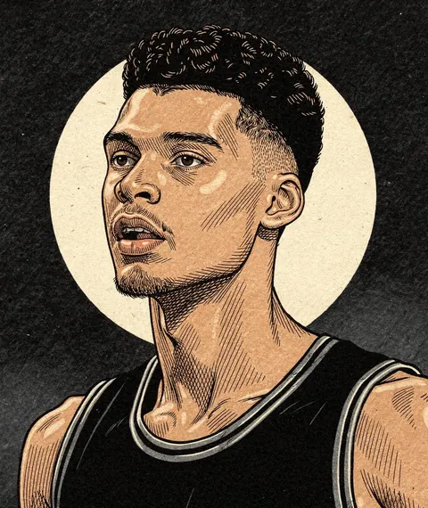
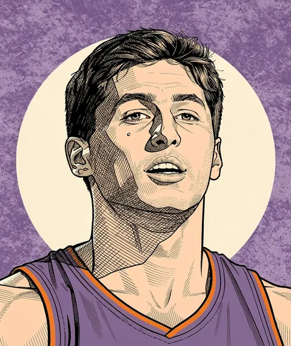
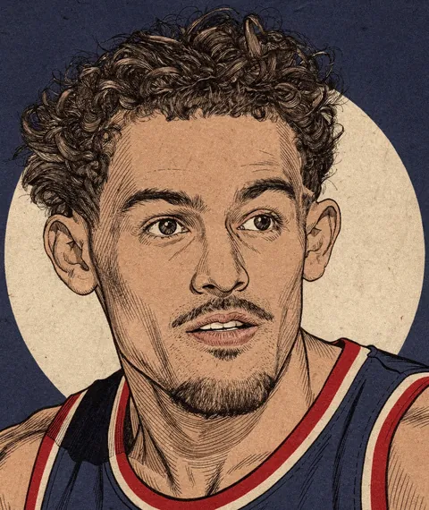
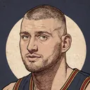
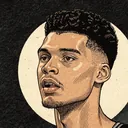
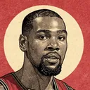
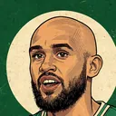
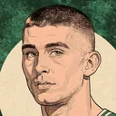

Who is actually worth it?
NBA player value, measured in marginal wins and set against what teams pay for it — contracts, drafts and trades.
")



Who creates the most value?
| # | Player | Team | WAR | Salary | Surplus |
|---|---|---|---|---|---|
| 1 |  Nikola Jokić | DEN | 20.1 | $55M | +$137M |
| 2 | Shai Gilgeous-Alexander | OKC | 17.6 | $38M | +$132M |
| 3 |  Victor Wembanyama | SAS | 13.3 | $13M | +$119M |
| 4 | Donovan Mitchell | CLE | 13.0 | $46M | +$82M |
| 5 |  Kevin Durant | HOU | 12.4 | $55M | +$69M |
Paid too little. Paid too much.
Veterans producing far more than their contracts pay for.
- Jalen Brunson NYK+$78M11.2 wins on $35M

Derrick White BOS+$75M10.3 wins on $28M
Payton Pritchard BOS+$71M7.6 wins on $7.2M
Veteran contracts that cost more than the production they buy.
- Trae Young WAS−$37M0.7 wins on $46M
- Domantas Sabonis SAC−$28M1.2 wins on $42M
- Zach LaVine SAC−$28M1.8 wins on $48M
Negotiated contracts only: rookie-scale and max deals are set by the league's collective bargaining agreement, not by the market (a max deal that has gone underwater still counts as overvalued).
What is your trade actually worth?
Stage any trade, past or present, and price it as the change in each club's total roster surplus — players, minutes, picks, re-signing rights and title odds.
- Paul George
- PHI 2028 1st
- PHI 2028 2nd
- PHI 2030 2nd
- PHI 2031 1st
- Jaylen Brown
From the column
; licensed CC BY-SA 4.0")
")
Player value is estimated in wins above replacement and priced at what a club would pay for those wins on an open market. On this scale a great season reads around 20 wins, not the 10 of public win statistics, and the best players are worth more than their team's entire salary cap. Replacement level sits at −1.77 RAPM.
Read the methodology →